Lyons Township High School · North and South Campus
Makeup tests, retakes and unfinished tests: students book, teachers send what's needed, and Testing Center staff run the day, from one place instead of SignUpGenius, paper forms and email chains.
The demo runs on made-up students and teachers. Click anything: nothing is saved, and no email is sent.
Students
Students open the app with their school account and land on their own Testing Center page.
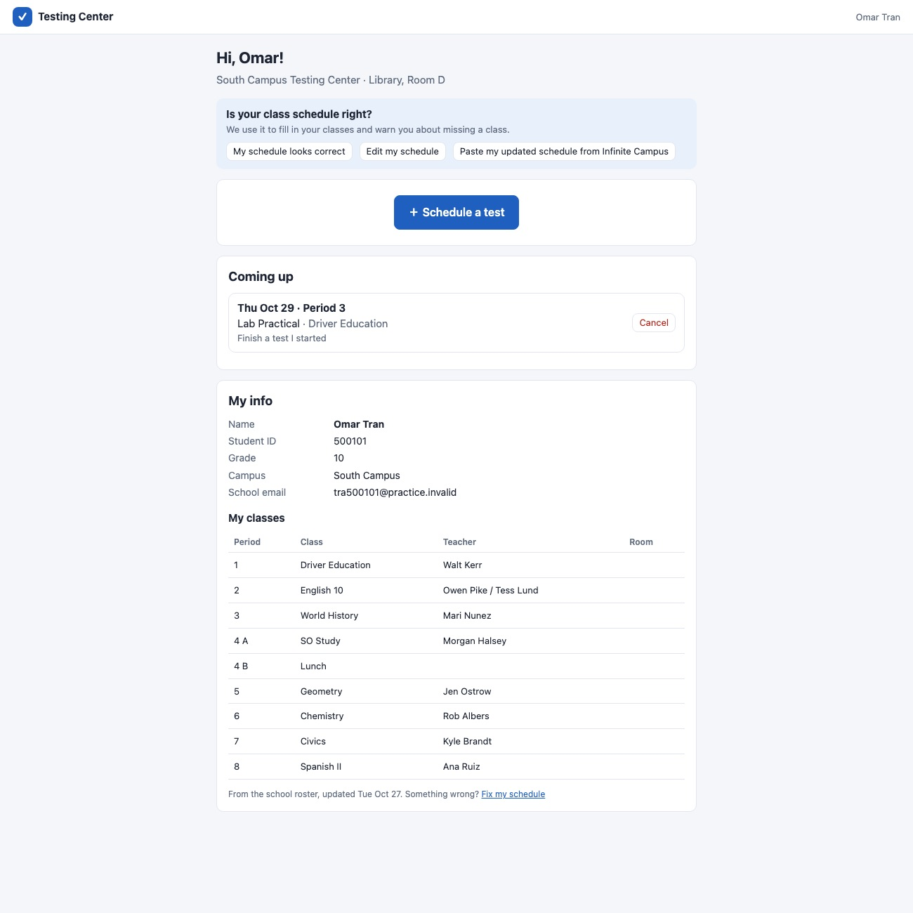
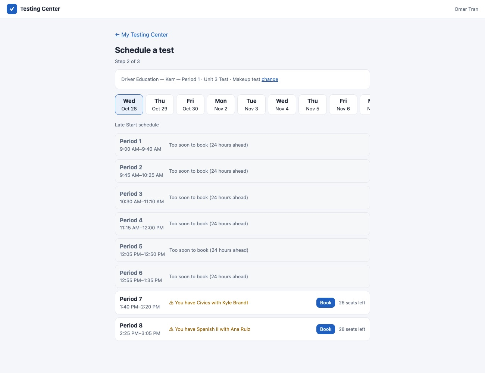
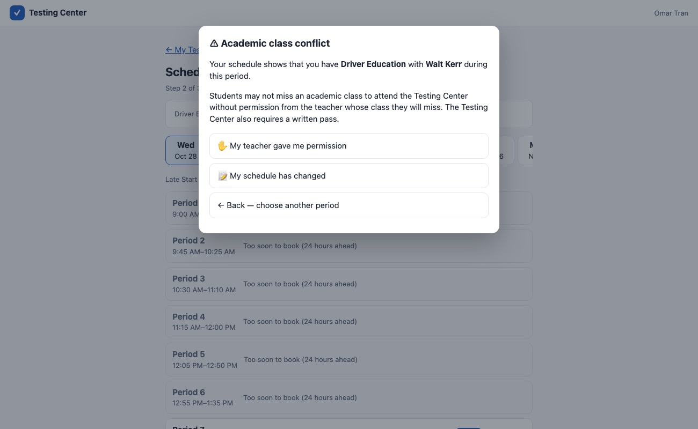
Teachers
Teachers open the app and see their own students' Testing Center appointments.
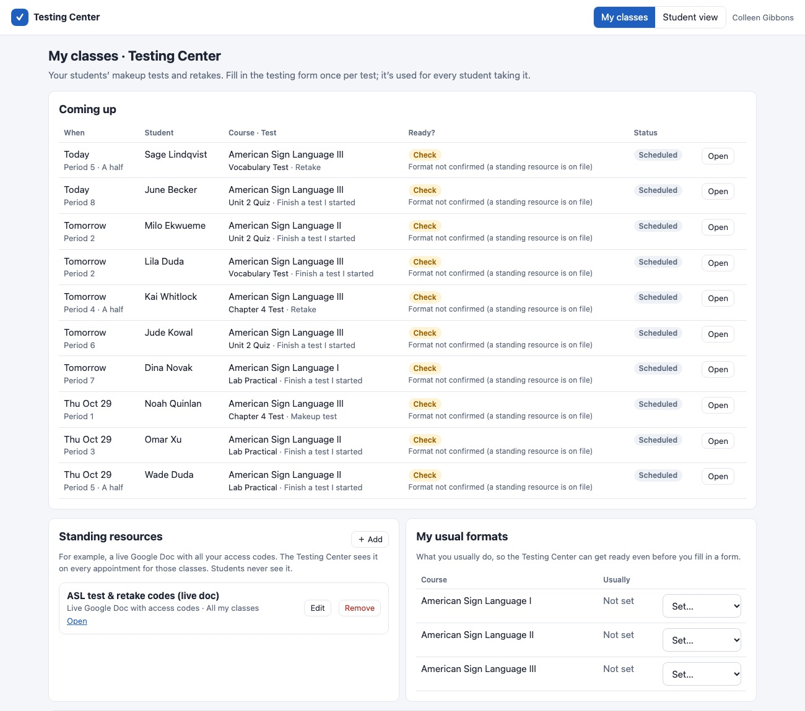
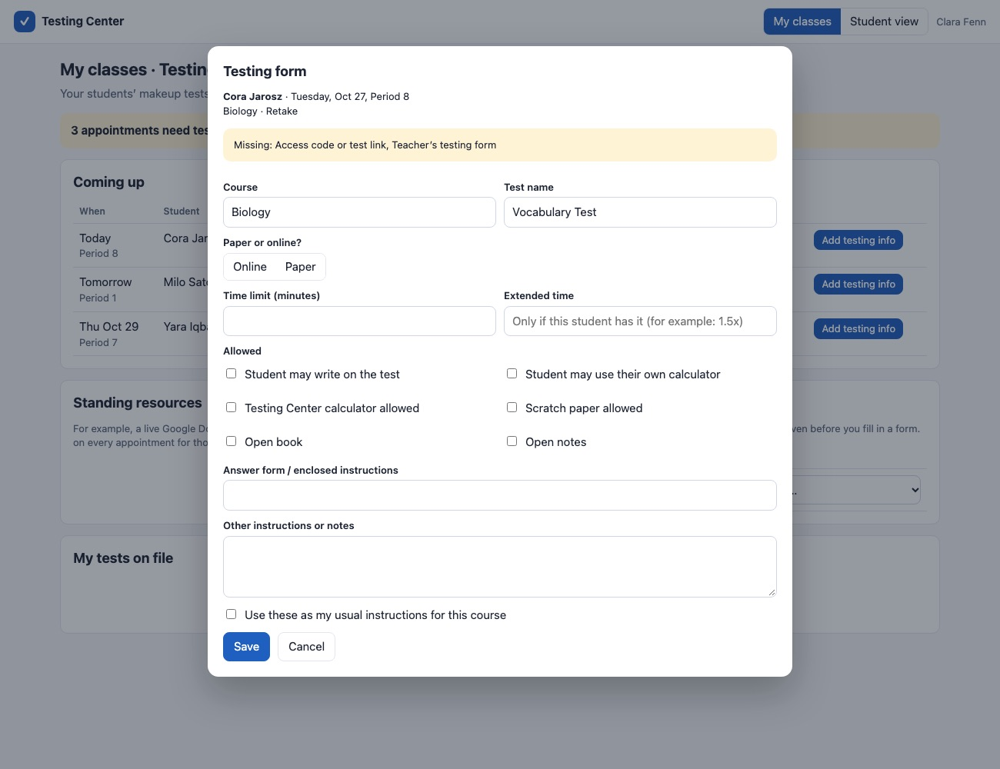
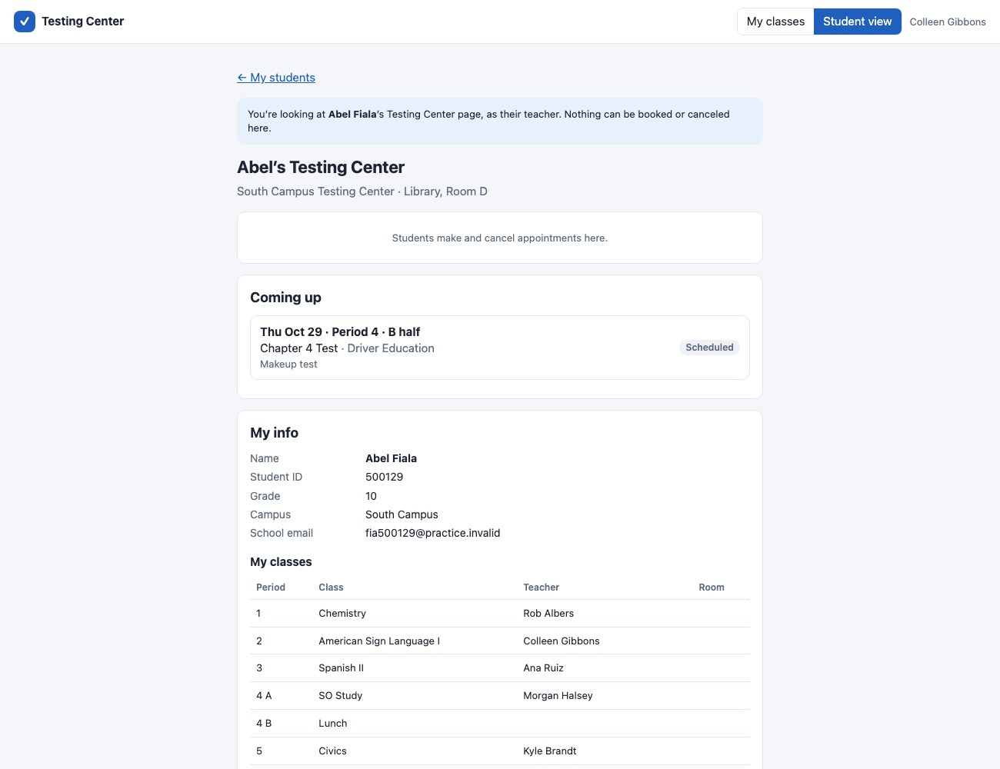
Testing Center staff
Password-protected, for the Testing Center coordinators. Each campus is separate; staff can be given view or edit access to the other one.
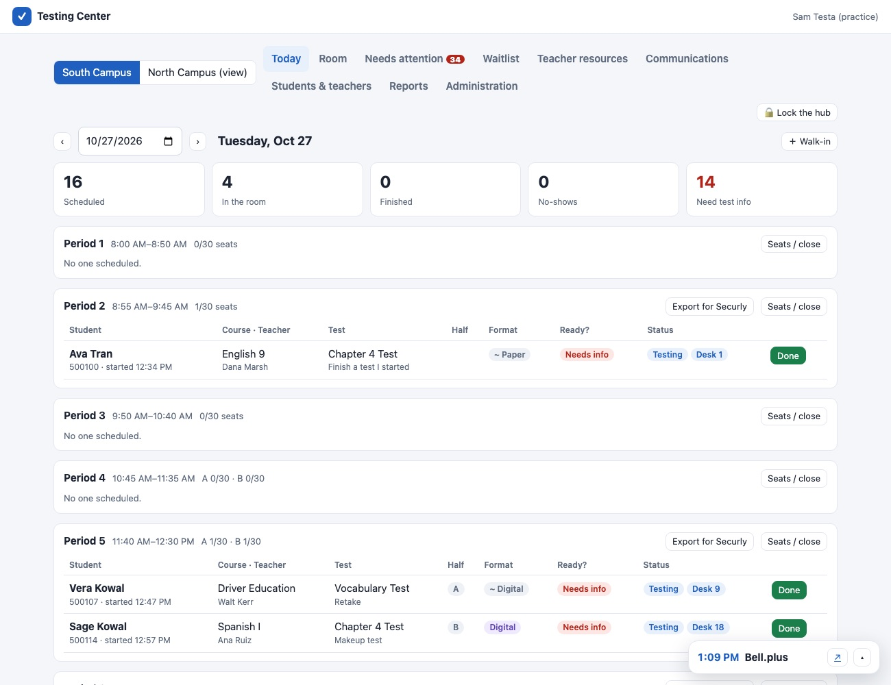
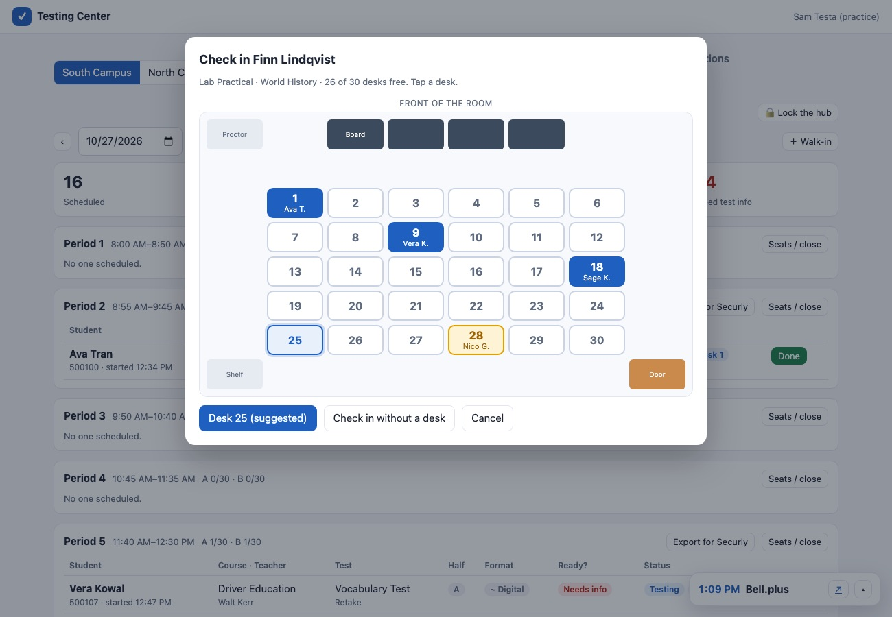
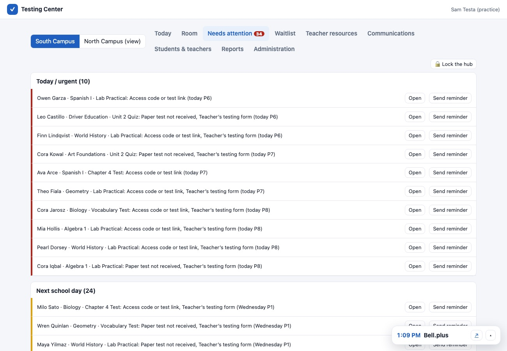
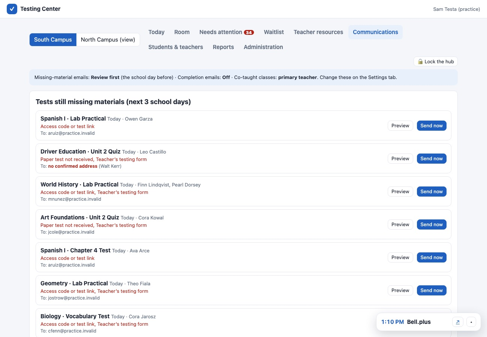
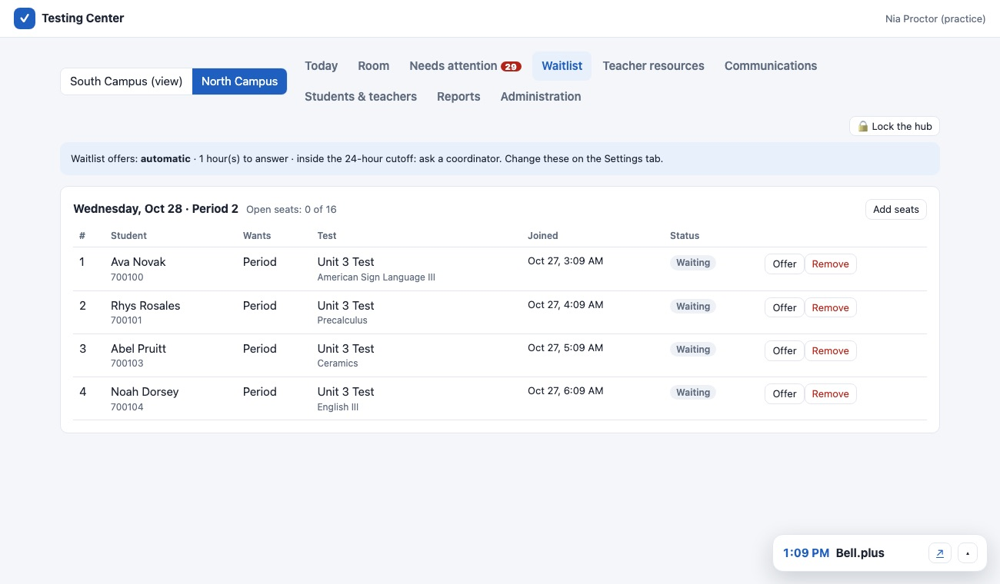
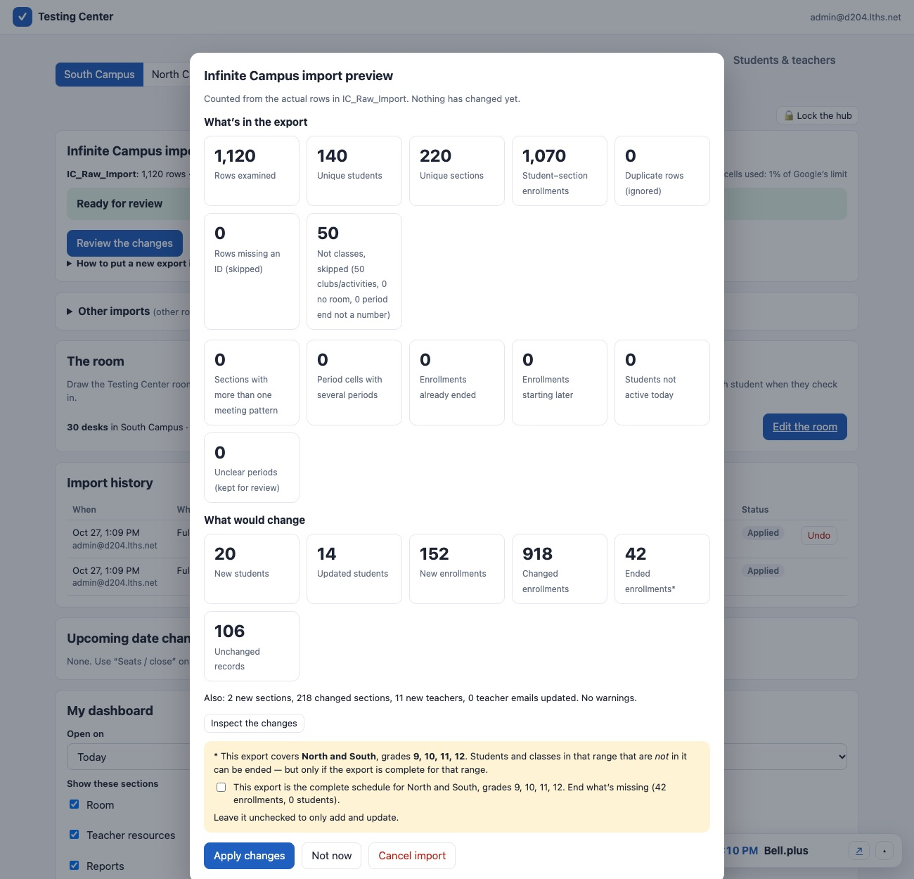
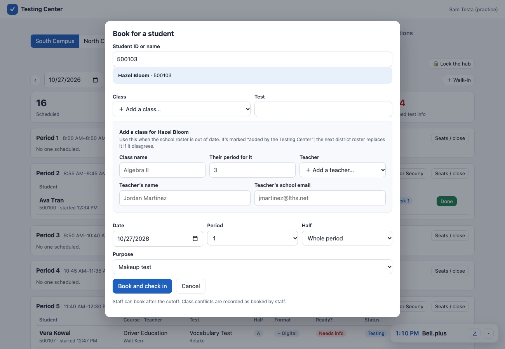
Privacy and safety
Where it stands